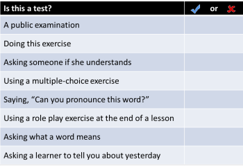
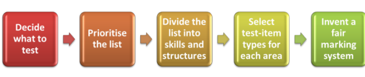
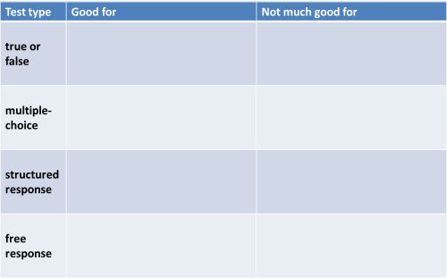

TKT Module 1: Background to language teaching
Assessment types and tasks

 |
Key concepts in this guideBy the end of this guide, you should be able to understand and use these key concepts: |
Look out for these words like this
in the text.
There will be tests at the end of the guide for you to check that
you understand the ideas.
Which of following do you see as a test? Click on the table when you have an answer.

Trick question?
No, not really. The point is that any of these activities can be
seen as a form of testing. You are asking
questions or setting tasks to find something out about the learners'
abilities.
We can take them one at a time:
- a public examination
- This sort of test is instantly recognisable to most of us. It is usually a very formal procedure with strict rules for its conduct. TKT is a form of public examination test, of course.
- doing that exercise
- In this case, the exercise is only marginally a test because the only person who will look at the result is you. However, in a classroom, you might set a task like this to find out what people already know.
- asking someone if she understands
- this is a kind of test but it's a pretty poor one because the answer won't tell you a great deal. Many learners will say yes, even if they don't. A test to avoid.
- using a multiple-choice exercise
- You may be using such an exercise as a teaching tool, to alert people to the range of choices, for example. However, most learners will see it as some kind of test and the outcomes will, presumably, be evaluated in some way. So it's a test.
- saying, "Can you pronounce this word?"
- This is a test if you want to hear the learner pronounce it rather than being satisfied with an answer like "Yes, thanks" or a nod.
- using a role play exercise at the end of a lesson
- The purpose of activities like this is twofold:
a) they gives the learners an opportunity to use the language in a freer way and make it a bit more personal to them but
b) they also allows you to discover if they can actually use it in the way you hoped.
So it's a test. - asking what a word means
- This is clearly a test. You want to know if the person knows the word or not. Be aware, however, that giving an off-the-cuff definition of a word in a foreign language is very challenging (that's what keeps dictionary writers in business). It's perfectly possible to know all you need to know about a word and still not be able to give a neat, clear definition of it.
- asking a learner to tell you about yesterday
- This may just be a bit of social chit-chat but in a classroom, many learners will assume they are being tested and their production evaluated. Good teachers will be listening carefully to see how well the learner can do this as well, of course to responding to the content of what the learner says.
 |
Some terms to help us think |
If almost everything we do can be seen as some sort of test, what are the differences? The following is not meant to confuse you with terminology but to help us focus. There are only four terms to grasp here.
 |
Task 1:
Can you guess what any of these mean? Click here when you have an answer. |
- formal testing
- informal testing
- formative testing
- summative testing
- formal testing: this is what public examinations are but also what
end-of-week or end-of-course tests usually are.
- formal tests are very often written but can have a spoken / listening element
- formal tests are not frequent
- formal tests are usually quite objective (or appear so)
- formal tests often have a set marking scheme (two marks for this, three for that etc.)
- the results are communicated to the learners
- learners recognise such tests for what they are and respond accordingly
- informal testing happens frequently in classrooms
- can be anything from a simple question to a complicated role play
- requires the teacher and the learners to evaluate rather than assess by recording marks
- does not rely on outcomes being given to the learners although feedback is often supplied somehow
- formative testing is quite frequent and
often done at the beginning, in
the middle or at the end of lessons. It can be formal or informal
and is designed to aid the
learning process by
- telling the teacher what has been learnt well so far and what needs more work
- focusing learners on what they have learned and what needs to be learned
- summative testing is what happens at the
end of a process and is designed to discover how well the
targets have been learned. Examples are:
- a public examination
- an end-of-course written test
- a final speaking exercise in a lesson
- homework tasks
It is, of course, not always so clear cut. Tests can be:
- formative and formal
- end-of week tests
written homework to be handed in and marked etc. - summative and informal
- tasks set at the end of lessons to see what progress has been
made
end-of-course activities which combine many aspects of what has been learned / taught - summative and formal
- end-of-course tests
public examinations - formative and informal
- checking understanding (Can you tell me what John said?)
checking pronunciation (How many syllables? Where's the stress?)
checking grammar (What's the past of 'go'?)
The last of these is very frequently done because informal,
formative testing goes on all the time in classrooms.
Whenever a teacher is asking a question and whenever a teacher is
listening to the learners' production or reading what they have
written, informal, formative testing is happening.
A graphical way of seeing this is:

Try this little formative test to see if you have remembered this.
 |
Informal tests |
Good informal testing is something that comes with training and
experience. It's not rocket science and one of the best ways to do
it is to listen carefully to your learners and ask questions which
target what you need to know. There's more on this in
the guide to checking learning.
What follows concerns more formal, often written, testing.
 |
Formal testing |
We need to get some more terminology right here to be able to think clearly about testing and assessment.
 |
Types of tests |
There are lots of these but the three major categories are
| Test types | What the tests are intended to do | Example |
| achievement tests | measure students' performance at the end of a period of study to evaluate the effectiveness of the programme | an end-of-course or end-of-week etc. test (even a mid-lesson test) |
| diagnostic tests | discover learners' strengths and weaknesses for planning purposes | a test set early in a programme to plan the syllabus |
| proficiency tests | test a learner’s ability in the language regardless of any course they may have taken | public examinations such as FCE etc. but also placement tests |
As far as day-to-day classroom use is concerned, teachers are mostly involved in writing and administering achievement tests as a way of telling them and the learners how successfully what has been taught has been learned.
 |
Designing tests |
Validity
This is a term you will often hear applied to testing. It means three things:
- Does the test measure what we say it measures?
For example, if we set out to test someone's ability to be part of an informal spoken transaction, do the test items we use actually test that ability or something else? If we are trying to test grammar and structure, are we also testing vocabulary knowledge in the test items? - Does the test contain a relevant and representative sample
of what it is testing?
For example, if we are testing someone's ability to write a formal email, are we getting them to deploy the sorts of language they actually need to do that?
If we are testing whether our learners have mastered the vocabulary we have taught, are we targeting enough items to tell us anything useful? - Does the test look like a proper test?
You want your learners to take it seriously so presentation is important.
Simple. Of course, we want our test to be valid so here's a
short guide to how to write a good test.
The test can be formative (in the middle of a course or even a
lesson) or it can be summative (coming at the end of a course or series
of lessons).
The process can look like this:

Deciding what to test, prioritising and organising
This is where good record-keeping comes in handy. Briefly, this means
- looking back and selecting the areas you think need testing. You won't be able to test everything (unless you have taught very little) so
- prioritise the list to make sure you are being fair to all your learners. They will better at some skills than at others so mix it up.
- now break the list down into skills (reading, writing, speaking, listening), grammar and structures, pronunciation and lexis
Selecting test items and working out how to mark the test
Now you have your list, you can decide how to test the items. Many of the task and activity types you met in the last guide (to practice activities and tasks for language and language skills development) can be used for testing as well as practising. You can open that guide in a new tab by clicking here.
Types of test tasks
- true or false
- This called an alternate-answer test. You can expand it slightly to include True, False and Don't know (the answer isn't in the text).
- multiple-choice
- This is sometimes called a fixed-response test. Typically, the correct answer must be chosen from three or four alternatives. The 'wrong' items are called the distractors. TKT is a good example!
- structured response
- In tests of this sort, you give a structure in which to form the answer. Skeleton sentence items of the sort which require the subject to expand a sentence such as He / come/ my house / yesterday / 9 o'clock into He came to my house at 9 o'clock yesterday are tests of this sort. Tests which ask students to write a text but also to include a number of given points are also structured response tests and oral tests in which students are asked to give and get a limited and specified amount of data are also structured response tests.
- free response
- In these tests, no guidance is given other than the instructions (called the rubric, incidentally) and the learners are free to write or say what they like. A hybrid form of this and a structured response item is one where the subject is given a list of things to include in the response.
|
|
Task
2:
Look at this table and decide what goes in the columns on the
right. Then click on it to compare your answers. |

Some examples
| Data | Task | Comment | |
| 1 | A text about
someone's hobbies and interests. For example, I much enjoy walking and reading but have little time for sports and outdoor games which are just too energetic for me now that I'm getting on a bit. I don't watch much television these days because I find it all rather dull and depressing. |
The writer
states that she used to do a lot of sports. True or False? |
The longer the
text and the more complex the sentence structure, the harder it
is. The more the reader has to read between the lines, the harder it is. |
| 2 | The same as above. | Choose the
best answer: a) She has never watched television much b) She dislikes depressing television programmes c) She never went in for outdoor activities d) She has never played sports |
The nearer the
distractors are to the truth, the harder it is. The more different the words in the question are from the text, the harder it is (see c)). |
| 3 | She / sports / now / she / getting / bit | Expand the sentences making the necessary changes | You usually need a bit of context to get reliable responses. With the text above, the response should be She doesn't play much sports now because she is getting on a bit. |
| 4 | She _______ play _______ many ________ as she _______ to. | Fill the gaps with a single word. | This is sometimes called a Cloze test although it isn't technically. A better term is a gap-fill test. |
| 5 | Same text as above. | Now write a similar paragraph about your hobbies and interests using the text as a guide. Write no more than 150 words. | This is a hybrid between free and structured response. |
Marking tests |
Some of these items require more judgement by the
marker (usually you) than others.
The more subjective the marking is, the less reliable will be the
results so where possible objective
marking is better. For example:
- Items 1 and 2 are either right or wrong so easy to mark but remember that you can get 50% by guessing in item 1, and 25% in item 2. You can also get it right even if you don't understand most of the text.
- In item 4, would you accept She didn't play so many games as she wanted to when what you actually wanted was She doesn't play as many sports as she used to? To get round the problem, you can give the learner a selection of words to choose from but that makes it easier, of course. The same issue arises with item 3.
- Item 5 demands most of the marker because you will have to
assess against a range of criteria, such as:
- use of lexis
- accuracy of grammar
- content
- ordering
- use of connectors
That's quite difficult to do and maintain fairness at the same time.
There are, of course, many more variants and types of test item than
we can cover here. Look at tests in coursebooks and be aware that
most examination boards and ELT publishers have examples of tests and
test types on their websites. Go there for more ideas.
There is also a fuller
guide to testing and assessment on this site.
 |
Self-test questions |
Before you go on, make sure you can answer these questions. If you can't, go back to the sections which give you trouble.
If you are happy with your progress, go on.
 |
Tests and practice for TKT |
| Test 1 | A short matching task (the same as the one you did above plus some) |
| Test 2 | A gap-fill test |
This is end of Module 1 course. Thank you for doing the course!
If you have now followed all the guides to Module 1 of the TKT, you
can:
Revise Module 1 by doing all the tests in the course.
Try a full practice examination for Module 1.
Return to the Module 1 index:

Return to the TKT Course index